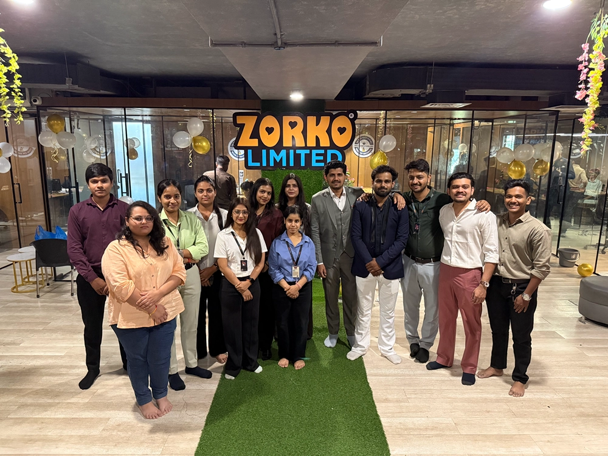

Explore a vegetarian fast-food business
Zorko’s published franchise offering focuses on vegetarian fast food. The corporate team connects business development, training, outlet support and other functions behind the network. This Group overview helps you explore the business before moving into a specific brand conversation.
Ask which format is available for your premises and city, what the owner is expected to manage, and which services are included. Compare the proposal with your budget, time and operating experience.
What should you compare?
Setup and operating costs
Separate the entry fee from equipment, fit-out, opening stock, deposits and working capital.
Training and support
Ask for the scope of training, launch coordination, procurement and ongoing outlet support in writing.
Owner involvement
Clarify daily operating responsibilities, staffing and the time you will need to commit.
Food franchise enquiries in Surat and Gujarat
Zorko’s corporate office is in Vesu, Surat. If you are considering a food franchise in Surat, elsewhere in Gujarat or another Indian city, provide the exact location and premises details so the team can discuss suitability and availability.
Check access, visibility, local alternatives, rent and customer demand. A successful format in one neighbourhood may operate differently in another.
Speak to the franchise team
Official franchise information & application
Investment, eligibility, availability and commercial terms are confirmed by the relevant team in a current written proposal.
Questions, answered.
How do I enquire about a food franchise?
Share your preferred city, premises information, operating experience and budget with the franchise team. Use the official brand application linked on this page.
What is the current franchise investment?
Request an itemised, dated proposal for your intended format and location. Franchise fees, total setup costs and working capital are different figures.
Can I enquire about Surat or Gujarat?
Yes. Ask the team about your intended location. A location appearing in a brand network does not confirm that a territory is available.
Does a low-investment franchise guarantee a profit?
No. Actual results depend on the location, sales, operating costs and execution. Assess the assumptions in a proposal and obtain appropriate professional advice before committing.